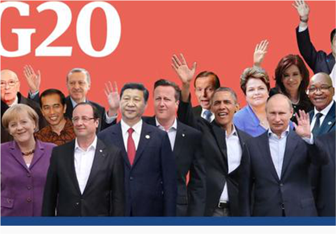

如何才能做好品牌农业建设？
互联网+”是一种新生产方式（1）“互联网大数据、强调发挥网络空间以智能化路径改造并提升传统产业的作用，从而促进各产业普遍增值并向服务化方向转型升级。
2016-09-06
1027
阅读

如何才能做好品牌农业建设？
互联网+”是一种新生产方式（1）“互联网大数据、强调发挥网络空间以智能化路径改造并提升传统产业的作用，从而促进各产业普遍增值并向服务化方向转型升级。
活动时间：2016/10/25~2016/10/25